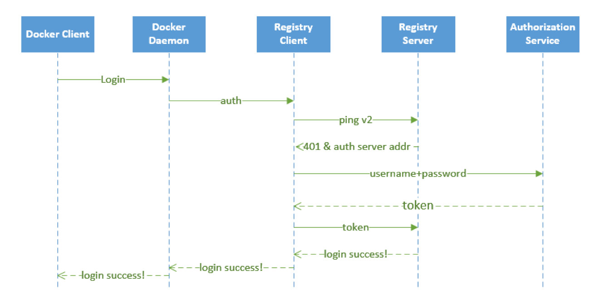
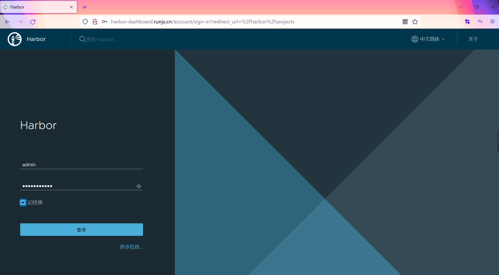
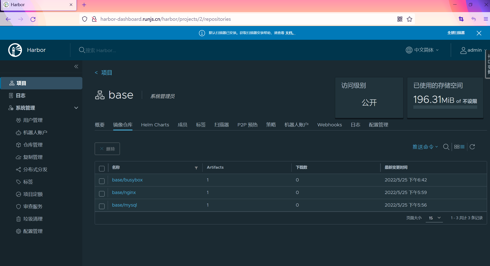
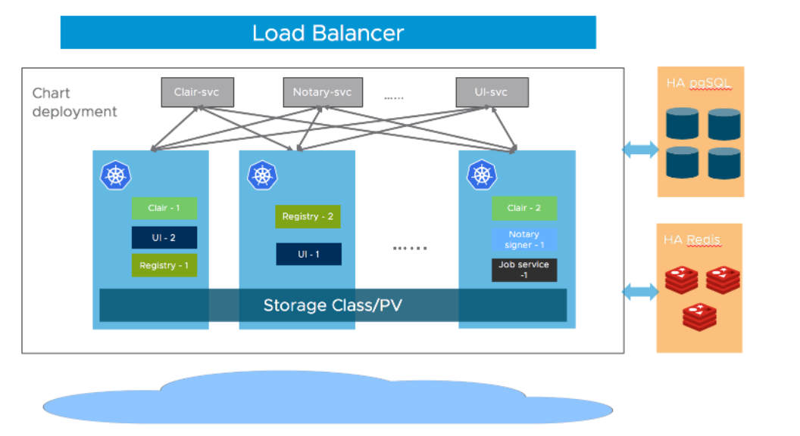

Harbor¶
Harbor 是一个 CNCF 基金会托管的开源的可信的云原生 docker registry 项目，可以用于存储、签名、扫描镜像内容，Harbor 通过添加一些常用的功能如安全性、身份权限管理等来扩展 docker registry 项目，此外还支持在 registry 之间复制镜像，还提供更加高级的安全功能，如用户管理、访问控制和活动审计等，在新版本中还添加了 Helm 仓库托管的支持。
Harbor 最核心的功能就是给 docker registry 添加上一层权限保护的功能，要实现这个功能，就需要我们在使用 docker login、pull、push 等命令的时候进行拦截，先进行一些权限相关的校验，再进行操作，其实这一系列的操作 docker registry v2 就已经为我们提供了支持，v2 集成了一个安全认证的功能，将安全认证暴露给外部服务，让外部服务去实现。
1.Harbor 认证原理¶
上面我们说了 docker registry v2
将安全认证暴露给了外部服务使用，那么是怎样暴露的呢？我们在命令行中输入
docker login https://registry.qikqiak.com
为例来为大家说明下认证流程：
docker client 接收到用户输入的 docker login 命令，将命令转化为调用 engine api 的 RegistryLogin 方法
在 RegistryLogin 方法中通过 http 盗用 registry 服务中的 auth 方法
因为我们这里使用的是 v2 版本的服务，所以会调用 loginV2 方法，在 loginV2 方法中会进行 /v2/ 接口调用，该接口会对请求进行认证
此时的请求中并没有包含 token 信息，认证会失败，返回 401 错误，同时会在 header 中返回去哪里请求认证的服务器地址
registry client 端收到上面的返回结果后，便会去返回的认证服务器那里进行认证请求，向认证服务器发送的请求的 header 中包含有加密的用户名和密码
认证服务器从 header 中获取到加密的用户名和密码，这个时候就可以结合实际的认证系统进行认证了，比如从数据库中查询用户认证信息或者对接 ldap 服务进行认证校验
认证成功后，会返回一个 token 信息，client 端会拿着返回的 token 再次向 registry 服务发送请求，这次需要带上得到的 token，请求验证成功，返回状态码就是200了
docker client 端接收到返回的200状态码，说明操作成功，在控制台上打印 Login Succeeded 的信息 至此，整个登录过程完成，整个过程可以用下面的流程图来说明：

要完成上面的登录认证过程有两个关键点需要注意：怎样让 registry 服务知道服务认证地址？我们自己提供的认证服务生成的 token 为什么 registry 就能够识别？
对于第一个问题，比较好解决，registry 服务本身就提供了一个配置文件，可以在启动 registry 服务的配置文件中指定上认证服务地址即可，其中有如下这样的一段配置信息：
......
auth:
token:
realm: token-realm
service: token-service
issuer: registry-token-issuer
rootcertbundle: /root/certs/bundle
......
其中 realm 就可以用来指定一个认证服务的地址，下面我们可以看到 Harbor 中该配置的内容。
关于 registry 的配置，可以参考官方文档：https://docs.docker.com/registry/configuration/
第二个问题，就是 registry 怎么能够识别我们返回的 token 文件？如果按照
registry 的要求生成一个 token，是不是 registry
就可以识别了？所以我们需要在我们的认证服务器中按照 registry 的要求生成
token，而不是随便乱生成。那么要怎么生成呢？我们可以在 docker registry
的源码中可以看到 token 是通过
JWT（JSON Web Token）来实现的，所以我们按照要求生成一个 JWT 的
token 就可以了。
对 golang 熟悉的同学可以去 clone 下 Harbor 的代码查看下，Harbor 采用 beego 这个 web 开发框架，源码阅读起来不是特别困难。我们可以很容易的看到 Harbor 中关于上面我们讲解的认证服务部分的实现方法。
2.安装¶
由于 Harbor 涉及的组件太多了，所以我们这里用更加便捷的 Helm 来进行安装。首先添加仓库地址：
$ helm repo add harbor https://helm.goharbor.io
"harbor" has been added to your repositories
$ helm repo update
在安装 Harbor 的时候有很多可以配置的参数，可以在 harbor-helm 项目上进行查看。
比如这里我们将主域名配置为 harbor.k8s.local，通过前面的 Ceph RBD
的 StorageClass 来提供存储，又因为前面我们在安装 GitLab
的时候就已经单独安装了 postgresql 和 reids
两个数据库，所以我们也可以配置 Harbor
使用这两个外置的数据库，这样可以降低资源的使用。但是使用外置的数据库我们需要提前手动创建数据库，比如我们这里使用的
GitLab 提供的数据库，则进入该 Pod 创建
registry、clair、notary_server、notary_signer 这4个数据库：
$ kubectl get pods -n kube-ops -l name=postgresql
NAME READY STATUS RESTARTS AGE
postgresql-65c9cdc4f4-ld86d 1/1 Running 0 30h
$ kubectl exec -it postgresql-65c9cdc4f4-ld86d /bin/bash -n kube-ops
kubectl exec [POD] [COMMAND] is DEPRECATED and will be removed in a future version. Use kubectl exec [POD] -- [COMMAND] instead.
root@postgresql-65c9cdc4f4-ld86d:/var/lib/postgresql# sudo su - postgres
postgres@postgresql-65c9cdc4f4-ld86d:~$ psql
psql (10.9 (Ubuntu 10.9-1.pgdg18.04+1))
Type "help" for help.
postgres=# CREATE DATABASE registry OWNER postgres; # 创建 registry 数据库
CREATE DATABASE
postgres=# GRANT ALL PRIVILEGES ON DATABASE registry to postgres; # 授权给 postgres 用户
GRANT
postgres=# GRANT ALL PRIVILEGES ON DATABASE registry to gitlab; # 授权给 gitlab 用户
GRANT
# Todo: 用同样的方式创建其他三个数据库：clair、notary_server、notary_signer
......
postgres-# \q # 退出
# 命令如下
CREATE DATABASE clair OWNER postgres;
GRANT ALL PRIVILEGES ON DATABASE clair to postgres;
GRANT ALL PRIVILEGES ON DATABASE clair to gitlab;
CREATE DATABASE notary_server OWNER postgres;
GRANT ALL PRIVILEGES ON DATABASE notary_server to postgres;
GRANT ALL PRIVILEGES ON DATABASE notary_server to gitlab;
CREATE DATABASE notary_signer OWNER postgres;
GRANT ALL PRIVILEGES ON DATABASE notary_signer to postgres;
GRANT ALL PRIVILEGES ON DATABASE notary_signer to gitlab;
创建storageClass
$ kubectl get sc
NAME PROVISIONER RECLAIMPOLICY VOLUMEBINDINGMODE ALLOWVOLUMEEXPANSION AGE
nfs-retain cluster.local/nfs-storage-class-nfs-client-provisioner Retain Immediate true 3h42m
数据库准备过后，就可以使用我们自己定制的 values 文件来进行安装了，完整的定制的 values 文件如下所示：(harbor-values.yaml)
harbor-values.yaml
externalURL: http://harbor-dashboard.runjs.cn
harborAdminPassword: Harbor12345
logLevel: debug
expose:
type: ingress
# 关闭tls，https
tls:
enabled: false
ingress:
hosts:
core: harbor-dashboard.runjs.cn
notary: notary.runjs.cn
controller: default
kubeVersionOverride: ""
className: ""
annotations:
ingress.kubernetes.io/ssl-redirect: "false"
ingress.kubernetes.io/proxy-body-size: "0"
nginx.ingress.kubernetes.io/ssl-redirect: "false"
nginx.ingress.kubernetes.io/proxy-body-size: "0"
persistence:
enabled: true
resourcePolicy: "keep"
persistentVolumeClaim:
registry:
storageClass: "nfs-retain"
# 如果是高可用的，多个副本组件需要使用 ReadWriteMany，默认为 ReadWriteOnce
accessMode: ReadWriteOnce
size: 500Gi
chartmuseum:
storageClass: "nfs-retain"
accessMode: ReadWriteOnce
size: 50Gi
jobservice:
storageClass: "nfs-retain"
accessMode: ReadWriteOnce
size: 20Gi
trivy:
storageClass: "nfs-retain"
subPath: ""
accessMode: ReadWriteOnce
size: 10Gi
database:
type: external
external:
host: "postgresql.kube-ops.svc.cluster.local"
port: "5432"
username: "gitlab"
password: "passw0rd"
redis:
type: external
external:
addr: "redis.kube-ops.svc.cluster.local:6379"
# 默认为一个副本，如果要做高可用，只需要设置为 replicas >= 2 即可
portal:
replicas: 1
core:
replicas: 1
jobservice:
replicas: 1
registry:
replicas: 1
chartmuseum:
replicas: 1
clair:
replicas: 1
notary:
server:
replicas: 1
signer:
replicas: 1
这些配置信息都是根据 Harbor 的 Chart 包默认的 values 值进行覆盖的。现在我们直接安装即可：
# 创建名称空间
$ kubectl get ns harbor
# 在线安装
$ helm install myharbor harbor/harbor -f harbor-values.yaml -n harbor
# 下载后离线安装
$ helm fetch harbor/harbor --untar
$ helm install myharbor harbor -f harbor-values.yaml -n harbor
正常情况下隔一会儿就可以安装成功了：
$ helm list -A|grep harbor
myharbor harbor 1 2022-05-25 17:47:08.888095397 +0800 CST deployed harbor-1.9.0 2.5.0
$ kubectl get pods -n harbor -l app=harbor
NAME READY STATUS RESTARTS AGE
myharbor-chartmuseum-59d9d485f5-k4h9c 1/1 Running 0 43m
myharbor-core-7767f7f766-7j2jc 1/1 Running 0 43m
myharbor-jobservice-5c89c7c784-8hh95 1/1 Running 0 43m
myharbor-notary-server-c9c7c8595-lp2q9 1/1 Running 0 43m
myharbor-notary-signer-557998988c-sw7zq 1/1 Running 0 43m
myharbor-portal-75ffcbf79d-ttj6d 1/1 Running 0 43m
myharbor-registry-7cc597447d-v8bnn 2/2 Running 0 43m
myharbor-trivy-0 1/1 Running 0 43m
安装完成后，我们就可以使用域名进行访问了，由于我们开启了 KubernetesIngress 支持的
$ kubectl get ingress -n harbor
NAME CLASS HOSTS ADDRESS PORTS AGE
myharbor-ingress <none> harbor-dashboard.runjs.cn 80 44m
myharbor-ingress-notary <none> notary.runjs.cn 80 44m
用户名使用默认的 admin，密码则是上面配置的默认 Harbor12345：

我们可以看到有很多功能，默认情况下会有一个名叫 library
的项目，该项目默认是公开访问权限的，进入项目可以看到里面还有
Helm Chart
包的管理，可以手动在这里上传，也可以对该项目里面的镜像进行一些其他配置。
3.推送镜像¶
现在我们来测试下使用 docker cli 来进行 pull/push 镜像，直接使用
docker login 命令登录：
# 隐式登录
$ docker login harbor-dashboard.runjs.cn
Username: admin
Password:
WARNING! Your password will be stored unencrypted in /root/.docker/config.json.
Configure a credential helper to remove this warning. See
https://docs.docker.com/engine/reference/commandline/login/#credentials-store
Login Succeeded
# 登录账号密码默认保存在/root/.docker/config.json.
$ cat /root/.docker/config.json
{
"auths": {
"harbor-dashboard.runjs.cn": {
"auth": "YWRtaW46SGFyYm9yMTIzNDU="
}
}
}
# 删除记录后，需要重新输入账号密码
# 显示登录
$ docker login -u admin -p xxxx harbor-dashboard.runjs.cn
如果开启了https，访问登录会报如下错误
$ docker login -u admin -p xxxx harbor-dashboard.runjs.cn
Username: admin
Password:
INFO[0006] Error logging in to v2 endpoint, trying next endpoint: Get https://harbor.k8s.local/v2/: x509: certificat
e signed by unknown authority
Get https://harbor.k8s.local/v2/: x509: certificate signed by unknown authority
解决办法：
这是因为在使用 docker login 登录的时候会使用 https
的服务，而我们这里是自签名的证书，所以就报错了，我们可以将使用到的 CA
证书文件复制到 /etc/docker/certs.d/harbor-dashboard.runjs.cn
目录下面来解决这个问题（如果该目录不存在，则创建它）。ca.crt
这个证书文件我们可以通过 Ingress 中使用的 Secret 资源对象来提供：
$ kubectl get secret myharbor-harbor-ingress -n harbor -o yaml
apiVersion: v1
data:
ca.crt: <ca.crt>
tls.crt: <tls.crt>
tls.key: <tls.key>
kind: Secret
metadata:
creationTimestamp: "2020-05-12T07:23:20Z"
labels:
app: harbor
chart: harbor
heritage: Helm
release: myharbor
name: myharbor-harbor-ingress
namespace: kube-ops
resourceVersion: "67162075"
selfLink: /api/v1/namespaces/kube-ops/secrets/myharbor-harbor-ingress
uid: 10a9d22d-3889-4ac4-87c4-5cda7e701828
type: kubernetes.io/tls
其中 data 区域中 ca.crt
对应的值就是我们需要证书，不过需要注意还需要做一个 base64
的解码，这样证书配置上以后就可以正常访问了。
不过由于上面的方法较为繁琐，所以一般情况下面我们在使用 docker cli
的时候是在 docker 启动参数后面添加一个 --insecure-registry
参数来忽略证书的校验的，在 docker 启动配置文件
/usr/lib/systemd/system/docker.service 中修改ExecStart的启动参数：
ExecStart=/usr/bin/dockerd --insecure-registry harbor-dashboard.runjs.cn
或者在 Docker Daemon 的配置文件中添加：
$ cat /etc/docker/daemon.json
{
"insecure-registries" : [
"harbor-dashboard.runjs.cn"
],
"registry-mirrors" : [
"https://docker.mirrors.ustc.edu.cn"
]
}
然后保存重启 docker，再使用 docker cli 就没有任何问题了：
$ docker login -u admin -p xxx harbor-dashboard.runjs.cn
WARNING! Using --password via the CLI is insecure. Use --password-stdin.
WARNING! Your password will be stored unencrypted in /root/.docker/config.json.
Configure a credential helper to remove this warning. See
https://docs.docker.com/engine/reference/commandline/login/#credentials-store
Login Succeeded
比如我们本地现在有一个名为 busybox
的镜像，现在我们想要将该镜像推送到我们的私有仓库中去，应该怎样操作呢？首先我们需要给该镜像重新打一个具有
harbor-dashboard.runjs.cn
前缀的镜像，然后推送的时候就可以识别到推送到哪个镜像仓库：
$ docker tag busybox:latest harbor-dashboard.runjs.cn/base/busybox:latest
$ docker push harbor-dashboard.runjs.cn/base/busybox:latest
The push refers to repository [harbor-dashboard.runjs.cn/base/busybox]
01fd6df81c8e: Pushed
latest: digest: sha256:62ffc2ed7554e4c6d360bce40bbcf196573dd27c4ce080641a2c59867e732dee size: 527
推送完成后，我们同样可以在 Portal 页面上看到这个镜像的信息：

镜像 push 成功，同样可以测试下 pull：
$ docker rmi -f harbor-dashboard.runjs.cn/base/busybox:latest
Untagged: harbor-dashboard.runjs.cn/base/busybox:latest
Untagged: harbor-dashboard.runjs.cn/base/busybox@sha256:62ffc2ed7554e4c6d360bce40bbcf196573dd27c4ce080641a2c59867e732dee
$ docker pull harbor-dashboard.runjs.cn/base/busybox:latest
latest: Pulling from base/busybox
Digest: sha256:62ffc2ed7554e4c6d360bce40bbcf196573dd27c4ce080641a2c59867e732dee
Status: Downloaded newer image for harbor-dashboard.runjs.cn/base/busybox:latest
harbor-dashboard.runjs.cn/base/busybox:latest
$ docker images |grep busybox
busybox latest beae173ccac6 4 months ago 1.24MB
harbor-dashboard.runjs.cn/base/busybox latest beae173ccac6 4 months ago 1.24MB
到这里证明上面我们的私有 docker 仓库搭建成功了，大家可以尝试去创建一个私有的项目，然后创建一个新的用户，使用这个用户来进行 pull/push 镜像，Harbor还具有其他的一些功能，比如镜像复制，大家可以自行测试，感受下 Harbor 和官方自带的 registry 仓库的差别。
4.高可用¶
Harbor 的大部分组件都是无状态的应用，比如 portal、core 等只需要增加其相应的副本数量即可；在存储数据层面，需要提供高可用的 Postgresql、Redis 集群，另外针对镜像和 chart 服务也需要提供可持久的存储。

要做高可用的 Harbor，我们需要将数据库通过外置方式进行提供，当然也需要保证数据库是高可用的。然后存储需要允许跨节点数据共享，也就是要支持 ReadWriteMany 模式，我们这里使用 Ceph 的话就需要使用 CephFS。然后将其他组件副本数设置为大于等于2：portal.replicas、core.replicas、jobservice.replicas、registry.replicas、chartmuseum.replicas、clair.replicas、notary.server.replicas 以及 notary.signer.replicas。
然后重新使用 Helm 进行安装即可。